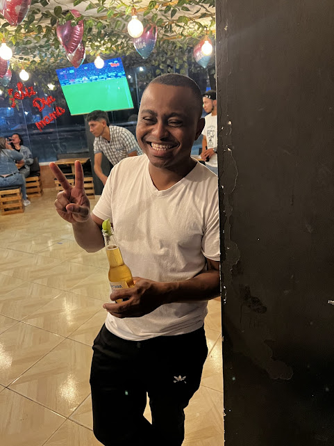
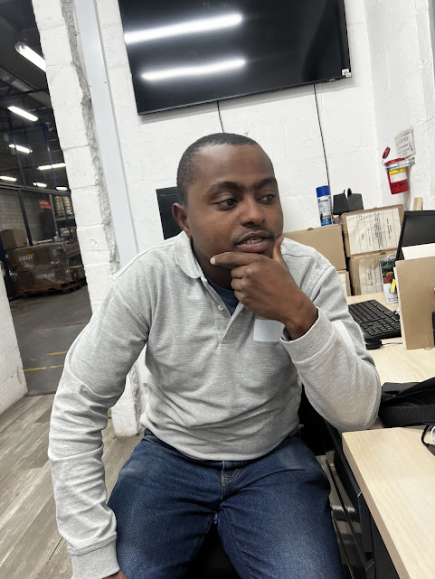
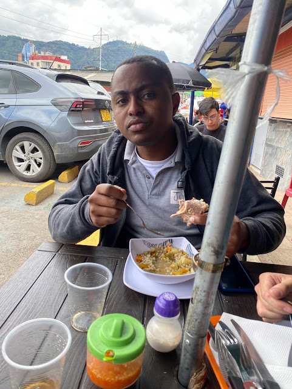
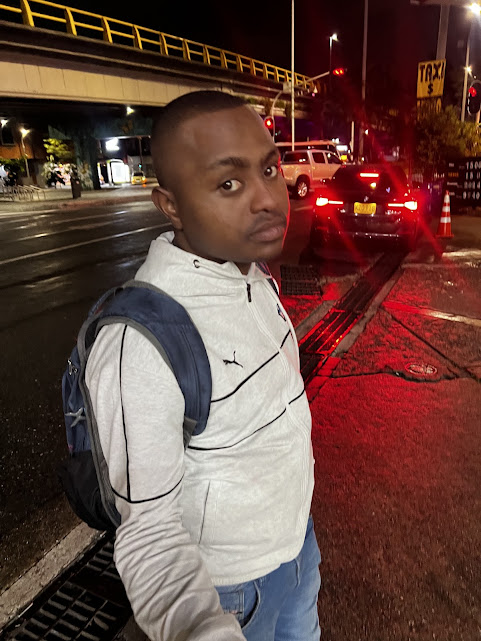

🎓
Educación
Promovemos el acceso a la educación de calidad y la formación integral para niños, niñas y jóvenes.
Trabajamos por el bienestar, la inclusión y el desarrollo de las comunidades del Valle del Chocó.

Impulsamos programas y acciones que generan oportunidades y mejoran la calidad de vida en el Valle del Chocó.
Promovemos el acceso a la educación de calidad y la formación integral para niños, niñas y jóvenes.
Fomentamos hábitos saludables y facilitamos el acceso a servicios de salud para las comunidades.
Fortalecemos comunidades a través de proyectos productivos, culturales y ambientales.
Brindamos acompañamiento y ayuda a familias en situación de vulnerabilidad y emergencias.
familias impactadas
proyectos comunitarios
alianzas activas
Desarrollamos iniciativas enfocadas en educación, bienestar, apoyo social y fortalecimiento comunitario.

Creamos espacios de aprendizaje, acompañamiento y crecimiento para comunidades vulnerables.

Promovemos el bienestar físico, emocional y social de las familias.

Impulsamos acciones que fortalecen la autonomía y la calidad de vida.
Momentos, actividades y acciones que reflejan el impacto de nuestra labor.




Conoce nuestras actividades recientes, campañas y avances comunitarios.
Seguimos trabajando junto a las comunidades para llevar bienestar, acompañamiento y esperanza.
Leer másFortalecemos vínculos con aliados que creen en el poder de la acción social.
Leer másCada aporte nos permite llegar a más hogares y construir nuevas oportunidades.
Leer másTu donación nos ayuda a seguir transformando vidas con educación, bienestar y apoyo social.
Donar ahora Luego conectaremos este botón con Wompi, Nequi, PSE o una pasarela real de pago.Escríbenos para conocer más sobre la fundación, vincularte como aliado o apoyar nuestros proyectos.